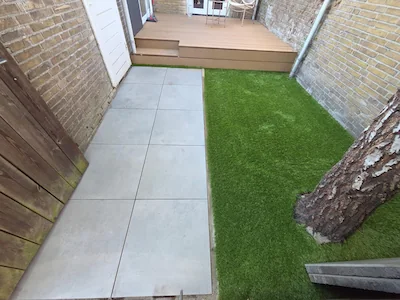
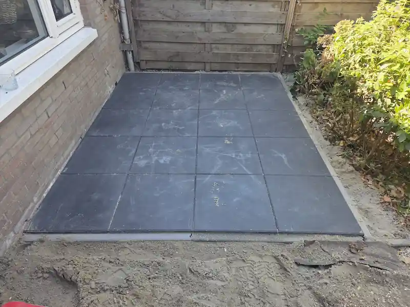

Van een eerste schets tot de definitieve oplevering – wij realiseren uw droomtuin met vakmanschap, hoogwaardige materialen en oog voor elk detail.

Vul uw gegevens in en wij nemen binnen 24 uur persoonlijk contact met u op voor een gratis nameting.
Bij TT Hovenierswerken geloven we dat een mooie tuin meer is dan alleen groen. Het is een verlengstuk van uw woning – een plek om te ontspannen, te genieten en te leven. Daarom benaderen wij elk project met dezelfde toewijding en precisie.
Of u nu een strakke moderne tuin wilt met bestrating en sfeerverlichting, of juist een groene oase met borders en een gazon – wij vertalen uw wensen naar een concreet en realistisch ontwerp.


Wij begeleiden u stap voor stap door het volledige aanlegproces.
We komen bij u langs voor een gratis kennismakingsgesprek. We luisteren naar uw wensen, bekijken de situatie ter plekke en bespreken de mogelijkheden.
Op basis van de intake stellen wij een gedetailleerde offerte op. U weet precies wat u kunt verwachten – geen verrassingen achteraf.
Na akkoord plannen we de werkzaamheden in. We zorgen voor alle benodigde materialen en stemmen de planning af op uw wensen.
Ons vakkundige team gaat aan de slag. We werken netjes, efficiënt en houden u gedurende het hele proces op de hoogte van de voortgang.
Na afronding lopen we de tuin samen met u door. Pas als u volledig tevreden bent, beschouwen wij het project als afgerond.
Staat uw vraag er niet bij? Neem gerust contact met ons op.
De kosten van tuinaanleg verschillen sterk per project, afhankelijk van de grootte van de tuin, het gekozen materiaal en de gewenste beplanting. Na een gratis nameting op locatie ontvangt u van ons een transparante, vaste offerte zonder verrassingen.
Een gemiddelde tuin realiseren wij binnen 1 tot 3 weken, afhankelijk van de omvang en complexiteit. Bij de offerte ontvangt u altijd een concrete tijdsplanning.
Voor de meeste tuinaanleg-werkzaamheden is geen vergunning nodig. Bij grotere bouwwerken zoals een overkapping of hoge schutting adviseren wij dit vooraf en denken we graag met u mee.
Ja, TT Hovenierswerken is actief in Baarn en een straal van 20 kilometer daaromheen, waaronder Soest, Amersfoort en Hilversum.
Zeker. Na de oplevering kunt u bij ons terecht voor periodiek tuinonderhoud, zodat uw nieuwe tuin er ook op lange termijn verzorgd bij blijft liggen.
Ontdek waarom klanten in Baarn en omgeving voor TT Hovenierswerken kiezen.
Vraag vandaag nog een vrijblijvende offerte aan. Wij zijn actief in Baarn en een straal van 20 km.
Offerte aanvragen